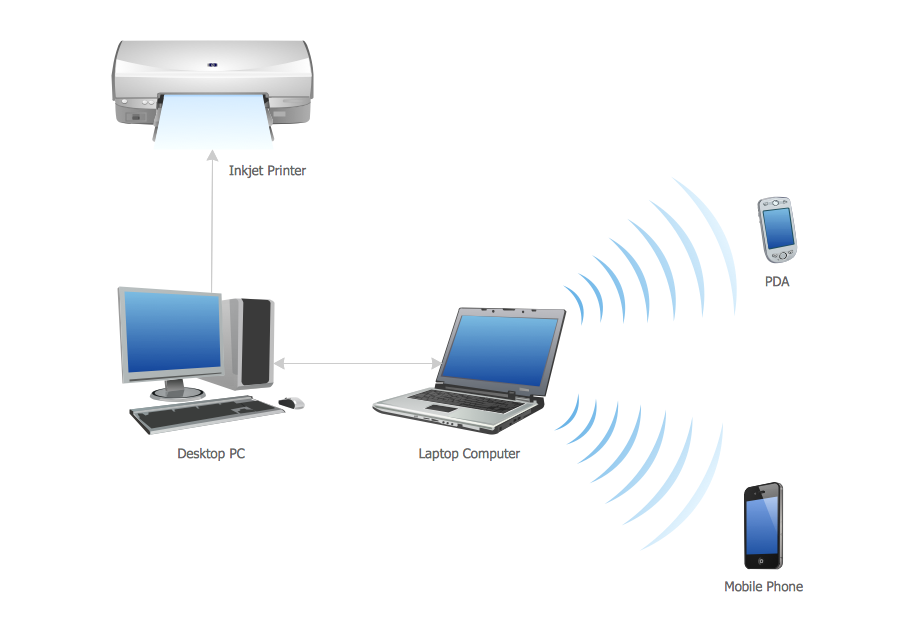
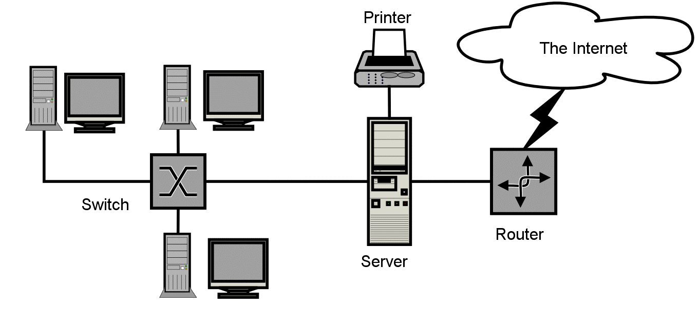
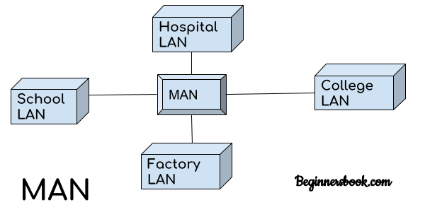
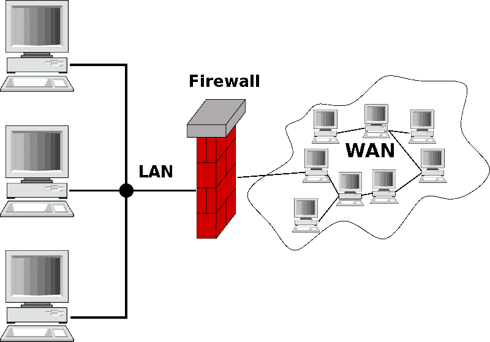
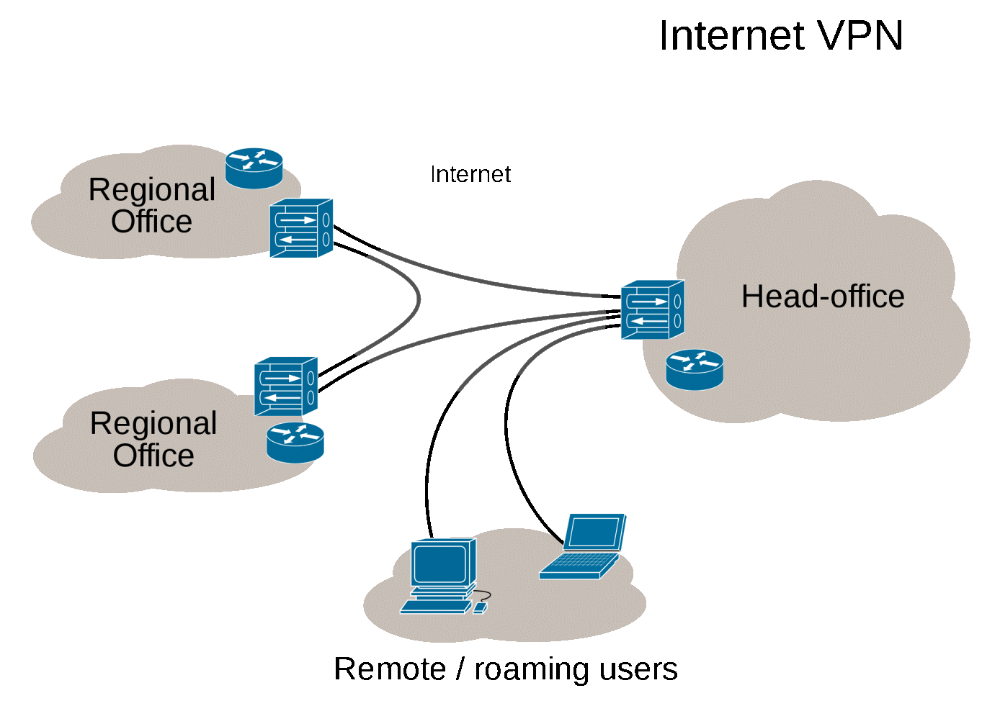

1 - Personal Area Network (PAN) ou réseau personnel :
Afin de connecter tous les appareils électroniques à domicile il est plus recommandé et sécurisé de recourir à un réseau personnel dit aussi réseau domestique. Qui permet dans transmettre généralement les donnés via des clés USB, Bluetooth, INSTEON, IrDA, ZigBee ou Z-Wave. Une autre alternative sera WPAN (Wide Personal Area Network) mais ces deux là ne sont pas optimisé pour une longue porté vu qu’il s’étendent que de quelques mètres et peuvent facilement être dépassé mais ils sont généralement pour des pièces du même bâtiment.
2 – Local Area Network (LAN)/Wide Local Area Network (WLAN):
Peut s'étendre de quelques mètres à quelques kilomètres et correspond au réseau d'une entreprise. Il peut se développer sur plusieurs bâtiments et permet de satisfaire tous les besoins internes de cette entreprise. Cela induit à une portée beaucoup plus grande que celui d’avant, avec un débit considérablement jouable mais surtout une interconnexion des appareils du même lieu de travail en l’occurrence. Si plus de deux ordinateurs sont imbriqués ensemble dans un réseau local, des composants supplémentaires comme un hub (ou concentrateur), bridge (pont) ou un switch (commutateur réseau) sont nécessaires et agissent alors comme des éléments de couplage et des nœuds de distribution. Un LAN est conçu pour permettre un transfert rapide de grandes quantités de données. Selon la structure du réseau et du moyen de transmission utilisé, un débit de données de 10 à 1000 Mbit/s est courant. Les réseaux locaux permettent un échange d’informations confortable entre les différents périphériques qui sont connectés au réseau. Dans le contexte d’une entreprise, il est courant que plusieurs ordinateurs de travail partagent des serveurs de fichiers, des imprimantes réseau ou des applications sur le LAN. Si un réseau local est implémenté par radio, on le nomme alors WLAN (wireless local area network) ou réseau local sans fil. En France on utilise aussi couramment le terme de WiFi pour désigner un WLAN. Il n’y a pas vraiment de différences entre ces deux termes, WiFi est simplement une marque déposée de protocoles de communication sans fil. La base technique de la norme WLAN ou WiFi est définie par les normes du groupe IEE 802.11. Les réseaux locaux sans fil offrent la possibilité d’intégrer facilement des appareils dans un réseau domestique ou d’entreprise et sont compatibles avec un LAN Ethernet filaire. Toutefois, le débit des données est inférieur à celui d’une connexion Ethernet.
3 - MAN (Metropolitan Area Network)
Un Metropolitan Area Network (MAN) ou réseau métropolitain, est un réseau de télécommunication à large bande qui relie plusieurs LAN géographiquement à proximité. Il s’agit en règle générale de différentes branches d’une société qui sont reliées à un MAN via des lignes loués. Les routeurs de haute performance et les connexions de fibres optiques hautes performances sont utilisés ce qui permet de fournir un débit de données beaucoup plus élevé que l’Internet. La vitesse de transmission entre deux nœuds éloignés est comparable à la communication dans un réseau local. L’infrastructure pour le MAN est assurée par les opérateurs de réseaux internationaux. En tant que réseau métropolitain, les villes câblées peuvent être intégrées dans les réseaux étendus : WAN (Wide Area Networks) et sur le plan international au niveau des GAN (Global Area Networks). Metro-Ethernet est une technologie de transmission spéciale disponible pour le MAN qui peut être utilisé pour construire de puissants réseaux métropolitains (MEN ou Metro Ethernet Network) basés sur Carrier Ethernet (CE1.0) ou Carrier Ethernet (CE 2.0).
4 – WAN (Wide Area Network) :
Alors que les réseaux métropolitains relient des zones qui se trouvent proches les unes des autres dans des zones rurales ou urbaines, les WAN (Wide Area Network) ou réseaux étendus couvrent des vastes zones géographiques à l’échelle d’un pays ou d’un continent par exemple. En principe, le nombre de réseaux locaux ou d’ordinateurs connectés à un réseau étendu est illimité. Alors que les réseaux locaux (LAN) et MAN peuvent être réalisés en raison de la proximité géographique des ordinateurs connectés ou des réseaux sur la base d’Ethernet, les réseaux étendus utilisent des techniques comme IP/MPLS (Multiprotocol Label Switching ), PDH (Plesiochrone Digitale Hierarchie), SDH (Synchrone Digitale Hierarchie), SONET (Synchronous Optical Network), ATM (Asynchronous Transfer Mode) et encore rarement l’obsolète X.25. Les réseaux étendus sont généralement détenues par une organisation ou une entreprise et sont donc exploités en privé ou loués. En outre, les fournisseurs de services Internet utilisent des WAN pour connecter les réseaux locaux d’entreprises et les clients à Internet.
5 - Global Area Network (GAN) :
Un réseau mondial comme Internet est aussi appelé GAN (Globe Area Network). Internet n’est cependant pas le seul réseau informatique de ce genre. Les entreprises actives au niveau international maintiennent également des réseaux isolés qui couvrent plusieurs WAN et connectent ainsi des ordinateurs d’entreprise dans le monde entier. Les GAN utilisent les infrastructures de fibre optique des réseaux étendus et combinent ces derniers avec des câbles sous-marins internationaux ou des transmissions par satellite. Ce qui donne un grand champ de couverture et laisse vachement passer la connexion et la répandre dans tout le globe.
6 – Virtual Private Network :
Un VPN (Virtual Privat Network) ou réseau privé virtuel est un réseau de communication virtuel qui utilise l’infrastructure d’un réseau physique pour relier logiquement les systèmes informatiques. Il peut s’agir de n’importe quel type de réseau détaillé plus haut, cependant Internet est le moyen de transmission le plus couramment utilisé. Cela relie presque tous les ordinateurs dans le monde entier et reste disponible gratuitement par opposition à l’exploitation privé d’un MAN ou WAN. Les données sont transférées au sein d’un tunnel virtuel qui est construit entre un client VPN et un serveur VPN. Le réseau public est utilisé comme moyen de transport, les réseaux privés virtuels sont généralement cryptés pour s’assurer de la confidentialité des données. Les VPN (Virtual Privat Network) sont utilisés pour connecter les réseaux locaux sur Internet ou pour permettre l’accès à distance à un réseau ou à un seul ordinateur via la connexion publique. Et ceux dans le but de se protéger contre tout espionnage dans les lieux publics.
